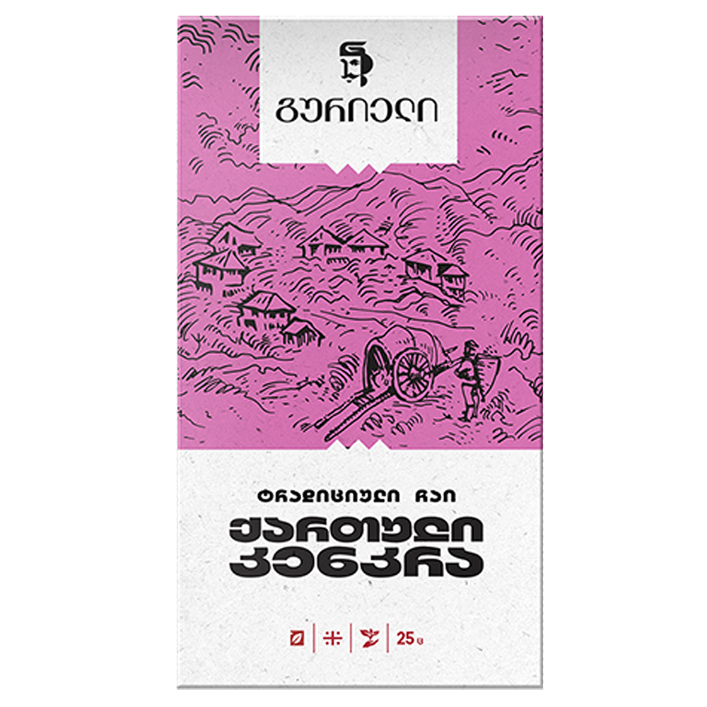
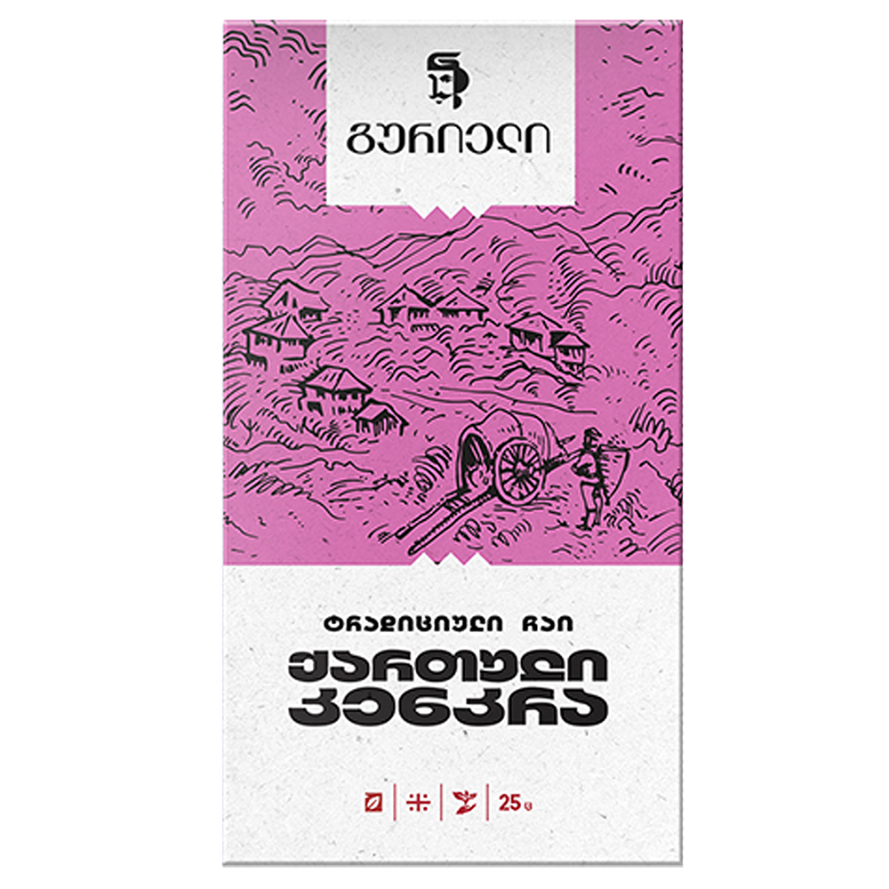
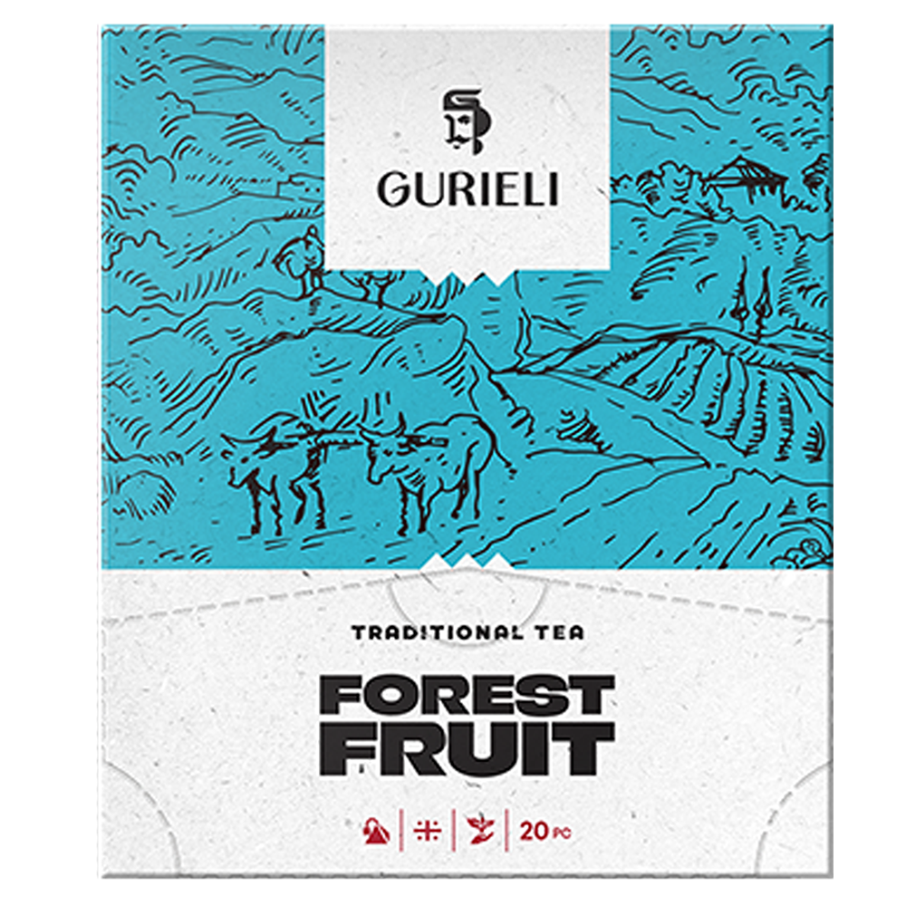
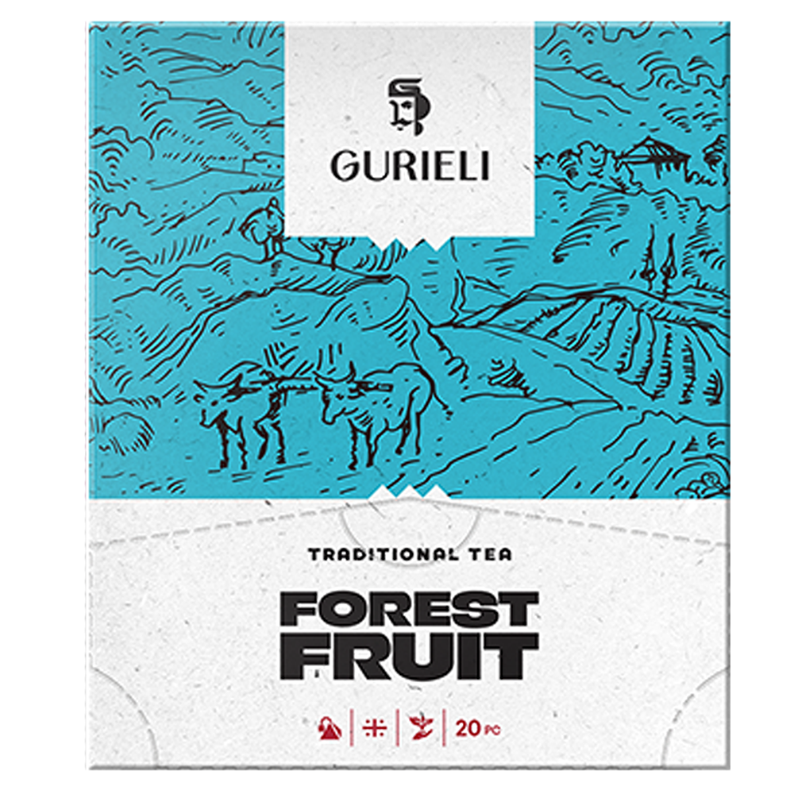

New redesigned product was inspired by the 200 years’ of history of Georgian tea, unique tea-making culture and tradition that was born in Guria, western part of Georgia. Specific character of the region inspired us to create new illustrated concepts, based on the visual stories from the archive of Guria.
Grown in the mountains of Western Georgia in an ecologically pure environment, the tea leaves are carefully processed without any artificial additives or coloring. They are blended with excellent local tea in order to get the best tea with its special nutritional value and all the health benefits. The brand combines black tea, green tea, black with bergamot, green with jasmine, Georgian berry and Forest fruit.

Black-brownish, well-stranded tea leaves of black tea has refined, soft taste, well-balanced astringency and sweetness. The drink is pure, has intense color with floral, full bouquet flavor.


Green tea leaves are well-stranded. The fragrance is gentle, classic, often associated with that of the cooked pumpkin, chicken broth and even fish flavors. The drink has special taste and lively color, having all the healing and natural properties that the green tea has to offer.


Tea, in which Gurieli and Lord Grey meet each other, conjures up the beginning of the nineteenth century, the period when tea begins to spread in Georgia, and the subtropical bergamot oil is used to create a classic black tea aroma in England.


Georgian nature unveiled to us the mystic art of fruit tea making. Since olden times, Georgian fruit has been renowned for its delicate aroma and outstanding taste. With every cup of Gurieli fruit tea, discover juice golden citrus of the subtropical Kolkhian lowland, bubbly untamed berries of Caucasus mountain slopes, and blazing savory fruits from lavish orchards of western Georgia.
 


Georgian nature unveiled to us the mystic art of fruit tea making. Since olden times, Georgian fruit has been renowned for its delicate aroma and outstanding taste. With every cup of Gurieli fruit tea, discover juice golden citrus of the subtropical Kolkhian lowland, bubbly untamed berries of Caucasus mountain slopes, and blazing savory fruits from lavish orchards of western Georgia.
 


Georgian nature unveiled to us the mystic art of fruit tea making. Since olden times, Georgian fruit has been renowned for its delicate aroma and outstanding taste. With every cup of Gurieli fruit tea, discover juice golden citrus of the subtropical Kolkhian lowland, bubbly untamed berries of Caucasus mountain slopes, and blazing savory fruits from lavish orchards of western Georgia.
In Gurieli Classic, we have the following available formats: Loose leaf, tea bags, tea bags with envelope, pyramid tea bags.